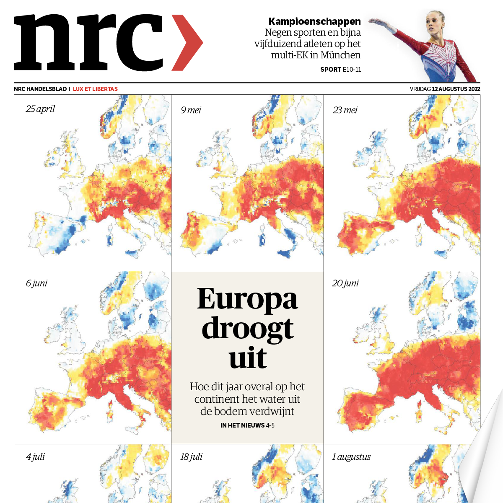
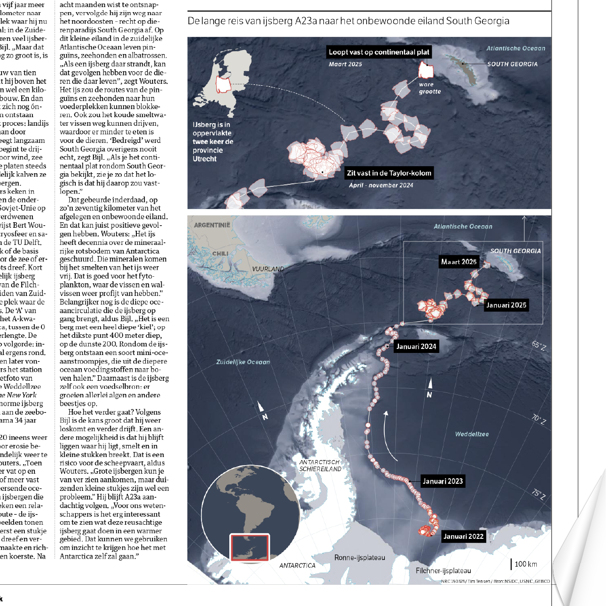
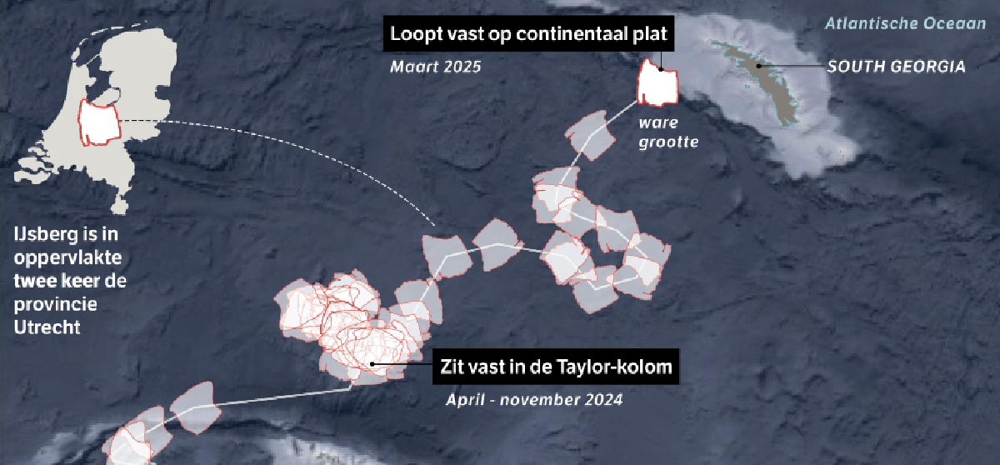
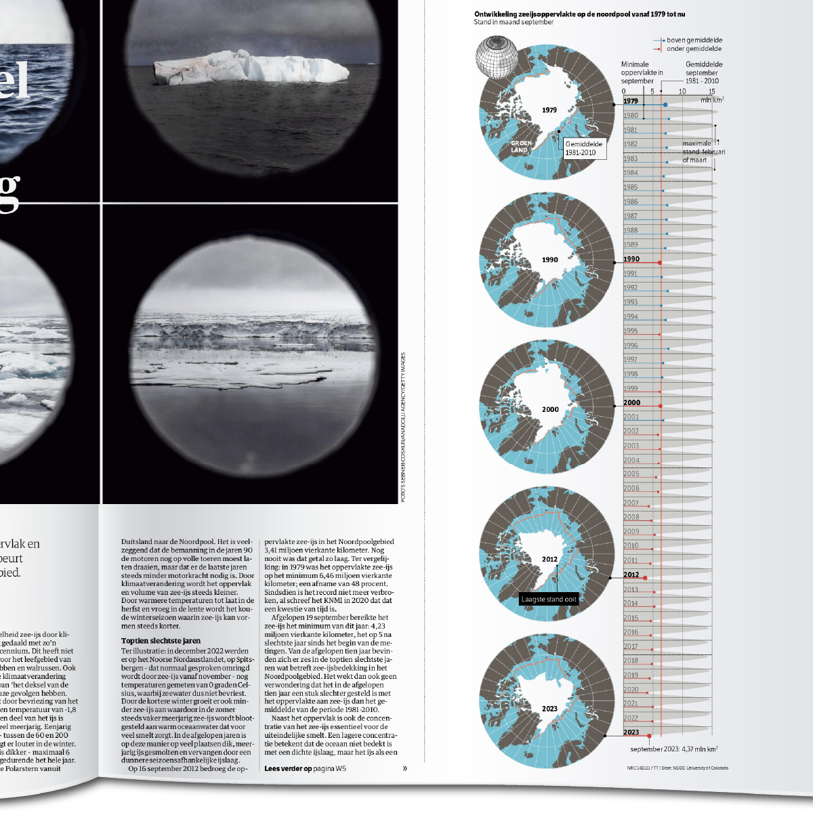
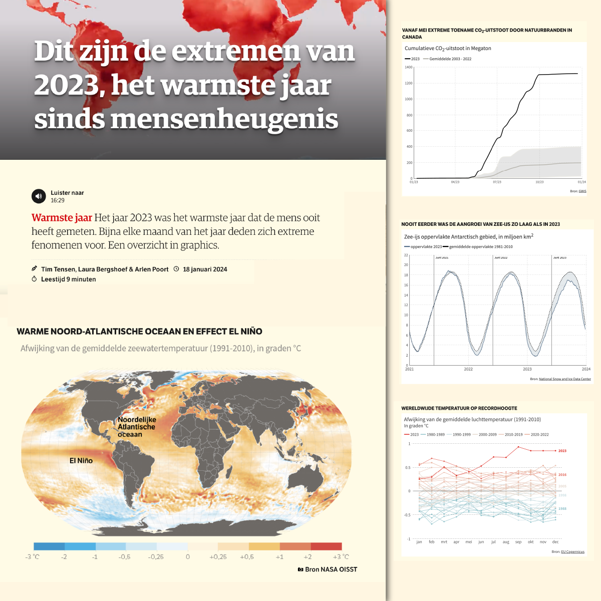
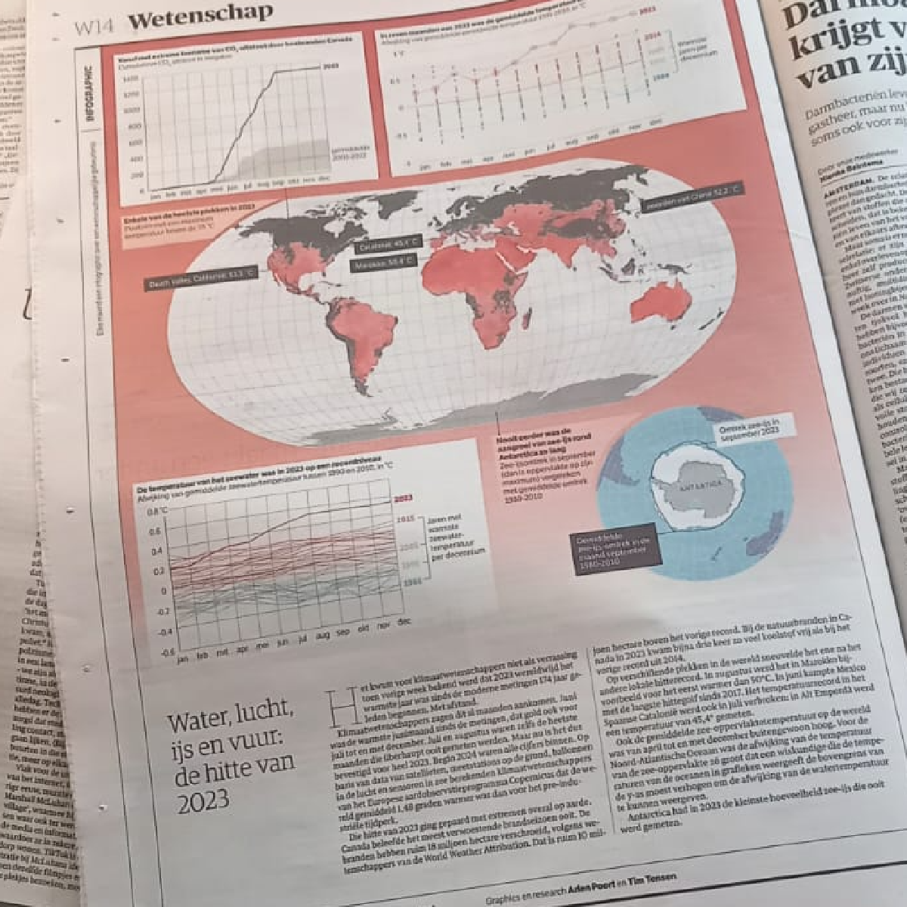
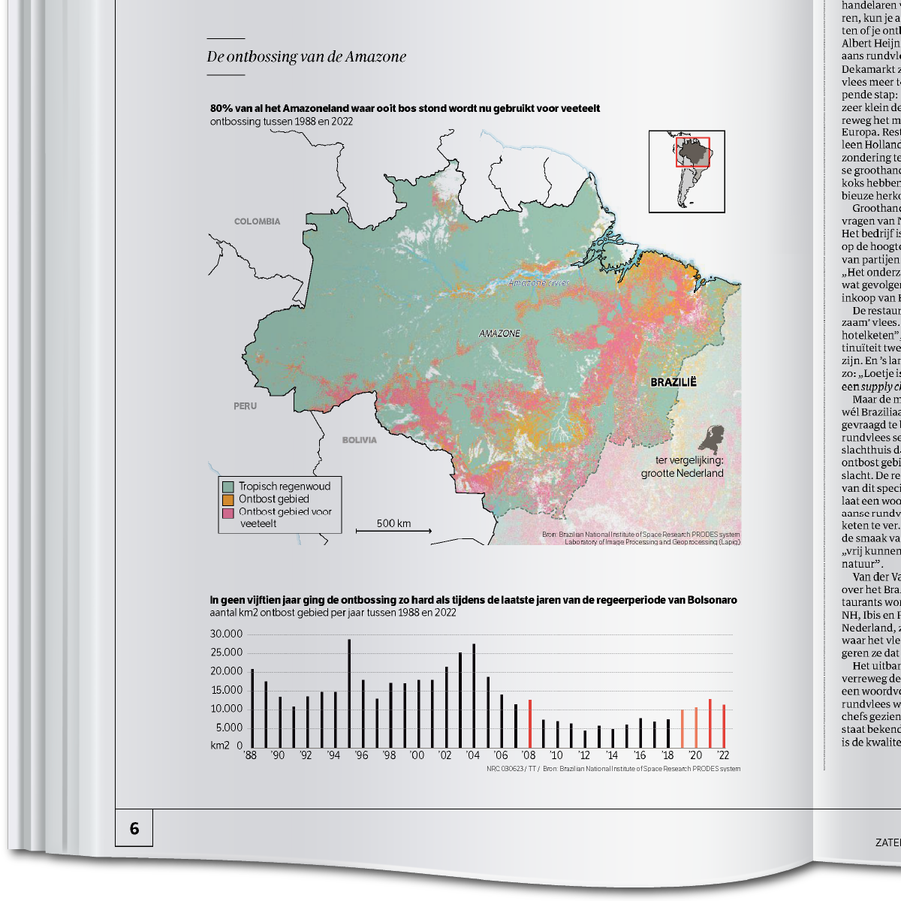

Europa droogt uit
Het jaar 2022 is was het droogste jaar ooit gemeten. Met klimaatdata maakte ik een serie kaarten over de bodemvochtigheid in Europa. De visualisatie laat zien waar droogte uitzonderlijke niveaus bereikt, veroorzaakt door een combinatie van weinig neerslag en langdurige hitte.

Voorpagina NRC dat de toename van droogte binnen Europa laat zien
IJsschots A23
In maart 2023 gebeurde er iets bijzonders, de ijsschots die 40 jaar geleden van Antarctica afbrak strandde drieduizend kilometer noordelijker in South Georgia. Voor dit artikel in NRC vertaalde ik satellietdata naar visualisaties van de reis van deze ijsberg A23a.

Route van de ijsberg vanaf 2022, zoals gepubliceerd in de papier NRC krant

route van de ijsberg en waar deze uiteindelijk vastloopt in South Georgia
Geanimeerde route voor het online artikel, met daarbij het aangroeiende en afnemende zee-ijs door de seizoenen heen
Noordpoolijs
Voor dit artikel in NRC visualiseerde ik de afname van zee-ijs in het Noordpoolgebied sinds 1979, en liet ik zien hoe zowel de omvang als de dikte van het ijs afnemen. De visualisaties maken zichtbaar hoe uitzonderlijk recente jaren zijn in historisch perspectief.
Animatie voor het online artikel van de afname van het zee-ijs door de jaren heen
Graphic die de ontwikkeling van het zeeijsoppervlakte ook voor de andere maanden laat zien. Hierbij wordt duidelijk dat het zeeijs op zijn kleinst is in september en grootst in februari.

De graphic zoals verschenen in de papieren krant NRC
Klimaat jaar in beeld
2023 was een jaar vol extremen, met per maand een aantal opvallende gebeurtenissen, van natuurbranden en smeltend zee-ijs tot extreme stormen. Zo wordt zichtbaar hoe uitzonderlijk het jaar was en hoe verschillende klimaateffecten zich wereldwijd manifesteerden.

Online artikel waarin verschillende voorbeelden worden uitgelicht van extreme fenomenen in 2023, onder andere het warmer wordende zeewater, bosbranden in Canada, de afname van zeeijs en de extreme warmte
Animatie van de aanwezigheid van koolstof in de lucht, een indicator voor (natuur)branden en de visualisatie van windstromen in de buurt van zuid Mexico die duidelijk het pad van de orkaan laten zien

Vertaling van de graphics voor de papieren NRC krant
Illegale veeteelt in Amazone Brazilië

2 2 5 brazilie2